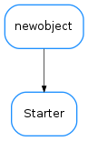

Starter¶

-
class
Starter(ds_name)[source]¶ Bases:
future.types.newobject.newobjectAbstract class for managing (starting, stopping, registering and removing) a Tango Device Server.
Derived classes should provide the methods for starting and stopping a device.
-
addNewDevice(device, klass=None)[source]¶ Register a device of this server in the DB (register the server if not present) e.g. to create Starter in an init script:
addNewDevice('sys/tg_test/foobar', klass='TangoTest')
Parameters: klass – class name. If None passed, it defaults to the server name (without instance name)
-
cleanDb(force=False)[source]¶ removes devices which have been added by
addNewDevice()and then removes the server if it was registered by this starter (or, if force is True, it removes the server in any case)Parameters: force ( bool) – force removing of the Server even if it was not registered within this starter
-